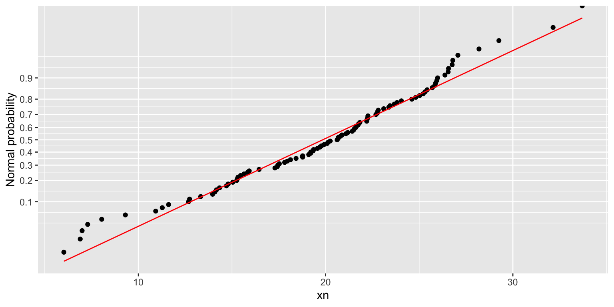
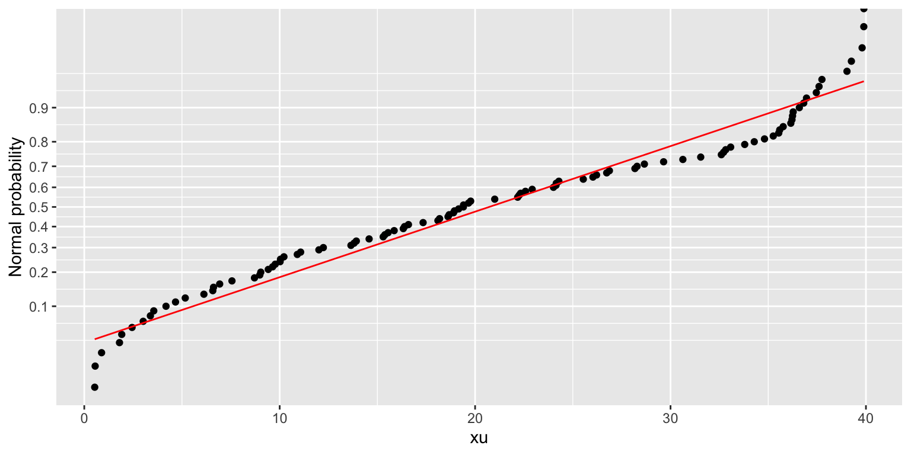
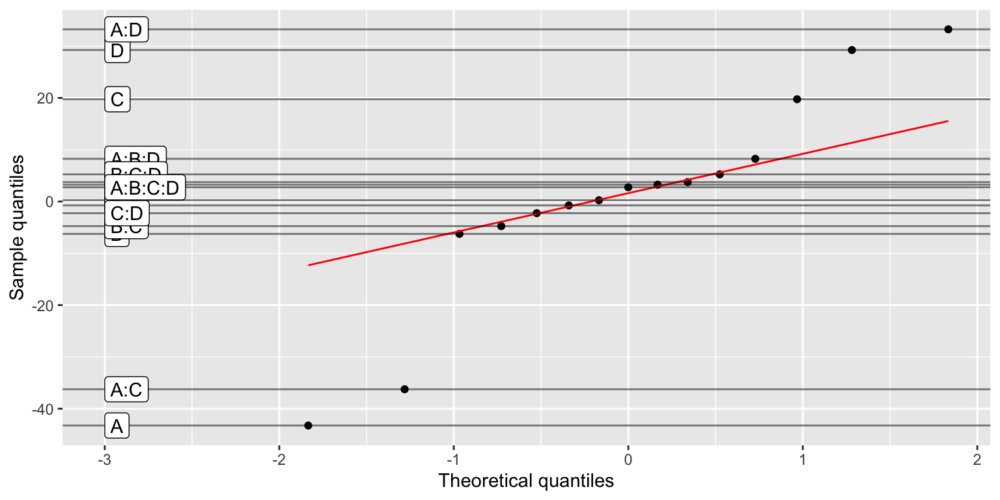

(dm <- fp_design_matrix(2, rep=2) %>%
mutate(Y=rnorm(n())))
#> Factorial Plan Design Matrix
#> Defining Relationship: ~ A * B
#> Factors: A B
#> Levels: -1 1
#> Fraction: NA
#> Type: plain
#>
#> # A tibble: 8 × 7
#> StdOrder RunOrder .treat .rep A B Y
#> <int> <int> <chr> <int> <dbl> <dbl> <dbl>
#> 1 1 1 (1) 1 -1 -1 0.295
#> 2 2 3 a 1 1 -1 1.41
#> 3 3 8 b 1 -1 1 -2.35
#> 4 4 6 ab 1 1 1 0.624
#> 5 5 5 (1) 2 -1 -1 -0.160
#> 6 6 2 a 2 1 -1 -1.13
#> 7 7 4 b 2 -1 1 0.774
#> 8 8 7 ab 2 1 1 -1.64Introducing the adas.utils package
packages
post
CRAN
design of experiments
Abstract
The package adas.utils, contributed by one of RTUG members, aims at helping in the design and analysis of factorial experiments.
Factorial plans
The package provides tools for dealing with factorial plan according to the Design of Experiments (DoE) protocols. The functions for dealing with DoE have names starting with fp_. As much as possible, we are aiming at a tidyverse-like syntax, so that the functions can be used in a pipe.
We are following conventions and techniques illustrated in the book Design and Analysis of Experiments by Douglas C. Montgomery.
Full factorial plan
You can create a full factorial plan with the fp_design_matrix function, passing the number of factors:
In this case, the factors are the first n capital letters.
If you want different factor names, use a right-side-only formula combining all the named factors with *:
fp_design_matrix(~Speed*Weight)
#> Factorial Plan Design Matrix
#> Defining Relationship: ~ Speed * Weight
#> Factors: Speed Weight
#> Levels: -1 1
#> Fraction: NA
#> Type: plain
#>
#> # A tibble: 4 × 7
#> StdOrder RunOrder .treat .rep Speed Weight Y
#> <int> <int> <chr> <int> <dbl> <dbl> <lgl>
#> 1 1 1 (1) 1 -1 -1 NA
#> 2 2 2 speed 1 1 -1 NA
#> 3 3 4 weight 1 -1 1 NA
#> 4 4 3 speedweight 1 1 1 NANOTE, though, that using custom factor names is discouraged, and won’t work as expected if you are using the functions for dealing with fractional factorial plans, especially for the analysis of alias structures among factors.
The yield column Y must then be completed according to the randomized RunOrder column.
It is possible to add custom scales to the factors, and also add names to the factors:
fp_design_matrix(2) %>%
fp_add_names(A="Temperature", B="Pressure") %>%
fp_add_scale(A=c(20, 25), B=c(75, 125), suffix=".scaled")
#> Factorial Plan Design Matrix
#> Defining Relationship: ~ A * B
#> Factors: A B
#> Levels: -1 1
#> Fraction: NA
#> Type: plain
#> Scaled factors:
#> A: [20, 25]
#> B: [75, 125]
#> Factor names:
#> A: Temperature
#> B: Pressure
#>
#> # A tibble: 4 × 9
#> StdOrder RunOrder .treat .rep A B A.scaled B.scaled Y
#> <int> <int> <chr> <int> <dbl> <dbl> <dbl> <dbl> <lgl>
#> 1 1 3 (1) 1 -1 -1 20 75 NA
#> 2 2 2 a 1 1 -1 25 75 NA
#> 3 3 1 b 1 -1 1 20 125 NA
#> 4 4 4 ab 1 1 1 25 125 NACustom levels
If you want a \(k^n\) factorial plan with custom levels, pass the levels argument. In this case, though, the .treat column with Yates’ treatment codes would be NA:
fp_design_matrix(2, levels=-1:1)
#> Factorial Plan Design Matrix
#> Defining Relationship: ~ A * B
#> Factors: A B
#> Levels: -1 0 1
#> Fraction: NA
#> Type: plain
#>
#> # A tibble: 9 × 6
#> StdOrder RunOrder .rep A B Y
#> <int> <int> <int> <int> <int> <lgl>
#> 1 1 4 1 -1 -1 NA
#> 2 2 8 1 0 -1 NA
#> 3 3 7 1 1 -1 NA
#> 4 4 5 1 -1 0 NA
#> 5 5 2 1 0 0 NA
#> 6 6 9 1 1 0 NA
#> 7 7 6 1 -1 1 NA
#> 8 8 1 1 0 1 NA
#> 9 9 3 1 1 1 NAAugment a plan
You can augment a plan by adding a central point, typically repeated:
fp_design_matrix(3) %>%
fp_augment_center(rep=4)
#> Factorial Plan Design Matrix
#> Defining Relationship: ~ A * B * C
#> Factors: A B C
#> Levels: -1 1
#> Fraction: NA
#> Type: centered
#>
#> # A tibble: 12 × 8
#> StdOrder RunOrder .treat .rep A B C Y
#> <int> <int> <chr> <int> <dbl> <dbl> <dbl> <lgl>
#> 1 1 6 (1) 1 -1 -1 -1 NA
#> 2 2 5 a 1 1 -1 -1 NA
#> 3 3 8 b 1 -1 1 -1 NA
#> 4 4 2 ab 1 1 1 -1 NA
#> 5 5 1 c 1 -1 -1 1 NA
#> 6 6 7 ac 1 1 -1 1 NA
#> 7 7 4 bc 1 -1 1 1 NA
#> 8 8 3 abc 1 1 1 1 NA
#> 9 9 10 center 1 0 0 0 NA
#> 10 10 11 center 2 0 0 0 NA
#> 11 11 9 center 3 0 0 0 NA
#> 12 12 12 center 4 0 0 0 NAThen if needed (because the analysis show low p-value for the quadratic term) you can add axial points to get a central composite design:
fp_design_matrix(3) %>%
fp_augment_center(rep=3) %>%
fp_augment_axial(rep=2)
#> Factorial Plan Design Matrix
#> Defining Relationship: ~ A * B * C
#> Factors: A B C
#> Levels: -1 1
#> Fraction: NA
#> Type: composite
#>
#> # A tibble: 35 × 8
#> StdOrder RunOrder .treat .rep A B C Y
#> <int> <int> <chr> <int> <dbl> <dbl> <dbl> <lgl>
#> 1 1 5 (1) 1 -1 -1 -1 NA
#> 2 2 1 a 1 1 -1 -1 NA
#> 3 3 6 b 1 -1 1 -1 NA
#> 4 4 7 ab 1 1 1 -1 NA
#> 5 5 2 c 1 -1 -1 1 NA
#> 6 6 8 ac 1 1 -1 1 NA
#> 7 7 3 bc 1 -1 1 1 NA
#> 8 8 4 abc 1 1 1 1 NA
#> 9 9 11 center 1 0 0 0 NA
#> 10 10 9 center 2 0 0 0 NA
#> # ℹ 25 more rowsFull example
Let’s see a full example using the ccd_experiment_yield dataset, which contains a list of the yield data for three sequential experiments in a central composite design.
First, we design a \(3\cdot 2^2\) factorial plan, with two factors and two levels each:
fp <- fp_design_matrix(2, rep=3)Ideally, we would then sort the table according to the RunOrder column, and complete the Y column with the yield data from the the real experiments. For the sake of documenting the package, we can directly add the yield data from the base field of the ccd_experiment_yield dataset (which holds values in standard Yates’ order):
fp$Y <- ccd_experiment_yield$baseNow we can fit a linear model to the data, and check the p-values of the ANOVA:
fp %>%
lm(Y ~ A*B, data=.) %>%
anova()
#> Analysis of Variance Table
#>
#> Response: Y
#> Df Sum Sq Mean Sq F value Pr(>F)
#> A 1 49.331 49.331 105.06 7.058e-06 ***
#> B 1 131.224 131.224 279.46 1.659e-07 ***
#> A:B 1 216.931 216.931 461.99 2.311e-08 ***
#> Residuals 8 3.756 0.470
#> ---
#> Signif. codes: 0 '***' 0.001 '**' 0.01 '*' 0.05 '.' 0.1 ' ' 1All factors and their interactions are significant. But is the two-level model enough? Let’s check for the quadratic terms, by augmenting the plan with a central point repeated 4 times. We also load the center field from the ccd_experiment_yield dataset:
fpc <- fp %>%
fp_augment_center(rep=4)
fpc$Y[fpc$.treat == "center"] <- ccd_experiment_yield$centerNow we can fit a model with the quadratic term, using either \(A\) or \(B\): since we only have a central point, we cannot discriminate which factor is contributing to the curvature in the response surface. We get:
fpc %>%
lm(Y ~ A*B+I(A^2), data=.) %>%
anova()
#> Analysis of Variance Table
#>
#> Response: Y
#> Df Sum Sq Mean Sq F value Pr(>F)
#> A 1 49.331 49.331 96.801 8.695e-07 ***
#> B 1 131.224 131.224 257.494 5.592e-09 ***
#> I(A^2) 1 15.204 15.204 29.834 0.0001972 ***
#> A:B 1 216.931 216.931 425.673 3.827e-10 ***
#> Residuals 11 5.606 0.510
#> ---
#> Signif. codes: 0 '***' 0.001 '**' 0.01 '*' 0.05 '.' 0.1 ' ' 1So the contribution of the quadratic term is significant. This means that we have to further augment the plan with axial points and investigate a Central Composite Design (CCD). Note: if the quadratic term contribution were not significant, we would have to remove the quadratic term from the model and accept the two-level model.
So let’s load the axial points from the axial field of the ccd_experiment_yield dataset, and fit a model with the quadratic terms and their interactions:
fpccd <- fpc %>%
fp_augment_axial(rep=2)
fpccd$Y[fpccd$.treat == "axial"] <- ccd_experiment_yield$axial
fpccd %>%
lm(Y ~ A*B*I(A^2)*I(B^2), data=.) %>%
anova()
#> Analysis of Variance Table
#>
#> Response: Y
#> Df Sum Sq Mean Sq F value Pr(>F)
#> A 1 75.196 75.196 94.1952 7.395e-08 ***
#> B 1 194.702 194.702 243.8964 1.097e-10 ***
#> I(A^2) 1 101.355 101.355 126.9638 1.017e-08 ***
#> I(B^2) 1 3.551 3.551 4.4479 0.05216 .
#> A:B 1 216.931 216.931 271.7423 5.087e-11 ***
#> A:I(A^2) 1 0.235 0.235 0.2945 0.59530
#> B:I(A^2) 1 1.046 1.046 1.3106 0.27022
#> I(A^2):I(B^2) 1 0.490 0.490 0.6142 0.44542
#> Residuals 15 11.974 0.798
#> ---
#> Signif. codes: 0 '***' 0.001 '**' 0.01 '*' 0.05 '.' 0.1 ' ' 1So we can finally state that a proper model would be Y ~ A*B+I(A^2):
fpccd %>%
lm(Y ~ A*B+I(A^2), data=.) %>%
summary()
#>
#> Call:
#> lm(formula = Y ~ A * B + I(A^2), data = .)
#>
#> Residuals:
#> Min 1Q Median 3Q Max
#> -1.64925 -0.60624 0.00919 0.65165 1.67506
#>
#> Coefficients:
#> Estimate Std. Error t value Pr(>|t|)
#> (Intercept) 1.0156 0.3061 3.318 0.00362 **
#> A 1.9390 0.2134 9.088 2.40e-08 ***
#> B 3.1201 0.2134 14.624 8.59e-12 ***
#> I(A^2) 2.9905 0.2834 10.552 2.20e-09 ***
#> A:B 4.2518 0.2754 15.437 3.32e-12 ***
#> ---
#> Signif. codes: 0 '***' 0.001 '**' 0.01 '*' 0.05 '.' 0.1 ' ' 1
#>
#> Residual standard error: 0.9541 on 19 degrees of freedom
#> Multiple R-squared: 0.9714, Adjusted R-squared: 0.9654
#> F-statistic: 161.5 on 4 and 19 DF, p-value: 2.191e-14Save to/load from a file
Once the design matrix is prepared, you typically want to save it to a file and use it for collecting data form experiments. You can use the write.csv function, but it is recommended to use the fp_write_csv function, which will also save the design matrix properties as comments:
dm <- fp_design_matrix(2) %>%
fp_add_names(A="Temperature", B="Pressure") %>%
fp_add_scale(A=c(2, 12), B=c(40, 60), suffix="_s") %>%
fp_write_csv("design_matrix.csv")Note that the fp_write_csv function invisibly returns the same design matrix, so you can use it in a pipe chain. Also, the CVS files has the rows arranged in the same order as the RunOrder column (i.e. randomized).
Once the CSV file has been completed, you can load it back into R using the fp_read_csv function:
dm <- dm %>%
fp_read_csv("design_matrix.csv")Note that fp_read_csv returns the design matrix reordered according to Yates’ standard order.
Fractional factorial plan
It is possible to divide a design matrix into a fractional factorial plan using the fp_fraction function. The fraction uses a defining relationship (dr) as \(I=ABCD\), which is mapped in R as a one side formula ~A*B*C*D.
Any fraction is added to the factorial.plan object in the fraction attribute.
A full \(2^n\) factorial plan can be reduced to a fractional factorial plan \(2^{n-p}\) by applying the fp_fraction function \(p\) times. For example, to get a \(2^{5-2}\) plan with the defining relationships \(I=ABCD\) and \(I=BCDE\):
fp_design_matrix(5) %>%
fp_fraction(~A*B*C*D) %>%
fp_fraction(~B*C*D*E)
#> Factorial Plan Design Matrix
#> Defining Relationship: ~ A * B * C * D * E
#> Factors: A B C D E
#> Levels: -1 1
#> Fraction: I=ABCD I=BCDE
#> Type: fractional
#>
#> # A tibble: 8 × 12
#> StdOrder RunOrder .treat .rep A B C D E Y ABCD BCDE
#> <int> <int> <chr> <int> <dbl> <dbl> <dbl> <dbl> <dbl> <lgl> <dbl> <dbl>
#> 1 1 6 (1) 1 -1 -1 -1 -1 -1 NA 1 1
#> 2 7 8 bc 1 -1 1 1 -1 -1 NA 1 1
#> 3 11 5 bd 1 -1 1 -1 1 -1 NA 1 1
#> 4 13 2 cd 1 -1 -1 1 1 -1 NA 1 1
#> 5 20 25 abe 1 1 1 -1 -1 1 NA 1 1
#> 6 22 29 ace 1 1 -1 1 -1 1 NA 1 1
#> 7 26 12 ade 1 1 -1 -1 1 1 NA 1 1
#> 8 32 24 abcde 1 1 1 1 1 1 NA 1 1Note that with the remove option you can control if you want to keep both fractions, and later on filter(ABC==1) them out.
fp_design_matrix(3) %>%
fp_fraction(~A*B*C, remove=FALSE)
#> Factorial Plan Design Matrix
#> Defining Relationship: ~ A * B * C
#> Factors: A B C
#> Levels: -1 1
#> Fraction: I=ABC
#> Type: fractional
#>
#> # A tibble: 8 × 9
#> StdOrder RunOrder .treat .rep A B C Y ABC
#> <int> <int> <chr> <int> <dbl> <dbl> <dbl> <lgl> <dbl>
#> 1 1 5 (1) 1 -1 -1 -1 NA -1
#> 2 2 2 a 1 1 -1 -1 NA 1
#> 3 3 4 b 1 -1 1 -1 NA 1
#> 4 4 3 ab 1 1 1 -1 NA -1
#> 5 5 1 c 1 -1 -1 1 NA 1
#> 6 6 7 ac 1 1 -1 1 NA -1
#> 7 7 6 bc 1 -1 1 1 NA -1
#> 8 8 8 abc 1 1 1 1 NA 1Also, note that the remove option is sticky, so that when you can apply the fp_fraction function multiple times and the first time has the option set to remove=FALSE, then all the following fp_fraction calls will have the same option set to FALSE. Setting remove=FALSE to any of the following calls can have unexpected behavior.
Alias structure
Any fraction of a factorial plan results in a set of aliases among effects. The package provides the following functions to deal with alias structures:
fp_alias_matrix: returns a matrix with the alias structure of the factors in the design matrix. The alias matrix has a plot method.fp_all_drs: given a set of defining relationships, returns the dependent one.fp_merge_drs: given a set of defining relationships, returns the merged one, i.e. the one having all the factors.fp_gen2alias: given a generator (i.e. the right side of a DR) and an effect name as strings, calculates the resulting alias.
For example:
(am <- fp_alias_matrix(~A*B*C, ~B*C*D))
#> Defining relationships:
#> I=ABC I=BCD I=AD
#>
#> A B AB C AC BC ABC D AD BD ABD CD ACD BCD ABCD
#> A 0 0 0 0 0 1 0 3 0 0 0 0 0 0 2
#> B 0 0 0 0 1 0 0 0 0 0 3 2 0 0 0
#> AB 0 0 0 1 0 0 0 0 0 3 0 0 2 0 0
#> C 0 0 1 0 0 0 0 0 0 2 0 0 3 0 0
#> AC 0 1 0 0 0 0 0 0 0 0 2 3 0 0 0
#> BC 1 0 0 0 0 0 0 2 0 0 0 0 0 0 3
#> ABC 0 0 0 0 0 0 0 0 2 0 0 0 0 3 0
#> D 3 0 0 0 0 2 0 0 0 0 0 0 0 0 1
#> AD 0 0 0 0 0 0 2 0 0 0 0 0 0 1 0
#> BD 0 0 3 2 0 0 0 0 0 0 0 0 1 0 0
#> ABD 0 3 0 0 2 0 0 0 0 0 0 1 0 0 0
#> CD 0 2 0 0 3 0 0 0 0 0 1 0 0 0 0
#> ACD 0 0 2 3 0 0 0 0 0 1 0 0 0 0 0
#> BCD 0 0 0 0 0 0 3 0 1 0 0 0 0 0 0
#> ABCD 2 0 0 0 0 3 0 1 0 0 0 0 0 0 0am %>% plot()The design matrix can be converted to a tibble thanks to the proper as_tibble.design.matrix S3 method:
am %>% as_tibble()
#> # A tibble: 42 × 3
#> Effect.x Effect.y generator
#> <chr> <chr> <chr>
#> 1 A BC ABC
#> 2 A D AD
#> 3 A ABCD BCD
#> 4 B AC ABC
#> 5 B ABD AD
#> 6 B CD BCD
#> 7 AB C ABC
#> 8 AB BD AD
#> 9 AB ACD BCD
#> 10 C AB ABC
#> # ℹ 32 more rowsStatistics
The package also provides some useful functions for statistical analysis of data.
Plotting
Normal probability plot
The normal probability plot is provided as an alternative to the quantile-quantile plot:
df <- tibble(
xn = rnorm(100, mean=20, sd=5),
xu = runif(100, min=0, max=40)
)
df %>% normplot(xn)
df %>% normplot(xu)
Pareto chart
The Pareto chart is a bar chart that displays the relative importance of problems in a format that is very easy to interpret. The bars are sorted in descending order, and the cumulative percentage of the total is shown by the line.
It can prove useful in the context of factorial plans, to identify the most important factors, or in sensitivity analysis, to identify the most important parameters.
The package provides a generic function, pareto_chart, that can be used with a tibble (or a data frame), or with a linear model (an lm object). In the latter case, the function produces the Pareto chart of the model effects.
For the general case, when you have a tibble with values and names:
set.seed(1)
tibble(
val=rnorm(10, sd=5),
cat=LETTERS[1:length(val)]
) %>%
pareto_chart(labels=cat, values=val)For the case of a linear model:
filtration %>%
lm(Y~A*B*C*D, data=.) %>%
pareto_chart()Daniel’s plot
In case of non-replicated factorial plans, the Daniel’s plot can be used to identify the most important factors: a quantile-quantile plot of the factors effects shows the significant factors and interactions off the diagonal.
daniel_plot_qq(lm(Y~A*B*C*D, data=filtration))
If you prefer, you can rather use a half-normal plot:
filtration %>%
lm(Y~A*B*C*D, data=.) %>%
daniel_plot_hn(nlab=6, repel=TRUE)It shows that none of the effects containing the B factor are significant, so we can reduce the model to Y~A*C*D:
filtration %>%
lm(Y~A*C*D, data=.) %>%
anova()
#> Analysis of Variance Table
#>
#> Response: Y
#> Df Sum Sq Mean Sq F value Pr(>F)
#> A 1 1870.56 1870.56 83.3677 1.667e-05 ***
#> C 1 390.06 390.06 17.3844 0.0031244 **
#> D 1 855.56 855.56 38.1309 0.0002666 ***
#> A:C 1 1314.06 1314.06 58.5655 6.001e-05 ***
#> A:D 1 1105.56 1105.56 49.2730 0.0001105 ***
#> C:D 1 5.06 5.06 0.2256 0.6474830
#> A:C:D 1 10.56 10.56 0.4708 0.5120321
#> Residuals 8 179.50 22.44
#> ---
#> Signif. codes: 0 '***' 0.001 '**' 0.01 '*' 0.05 '.' 0.1 ' ' 1Even better, the model can be further reduced to Y~A*C+A*D. Compare this conclusion with the last Pareto chart above.
Utilities
This package also provides a function for easily loading data files made available on the accompanying course documentation on https://paolobosetti.quarto.pub/data:
examples_url("battery.dat") %>% read.table(header=TRUE)
#> RunOrder StandardOrder Temperature Material Repeat Response
#> 1 34 1 15 1 1 130
#> 2 25 2 70 1 1 34
#> 3 16 3 125 1 1 20
#> 4 7 4 15 2 1 150
#> 5 8 5 70 2 1 136
#> 6 1 6 125 2 1 25
#> 7 26 7 15 3 1 138
#> 8 36 8 70 3 1 174
#> 9 6 9 125 3 1 96
#> 10 13 10 15 1 2 155
#> 11 3 11 70 1 2 40
#> 12 31 12 125 1 2 70
#> 13 27 13 15 2 2 188
#> 14 29 14 70 2 2 122
#> 15 12 15 125 2 2 70
#> 16 14 16 15 3 2 110
#> 17 30 17 70 3 2 120
#> 18 24 18 125 3 2 104
#> 19 5 19 15 1 3 74
#> 20 21 20 70 1 3 80
#> 21 10 21 125 1 3 82
#> 22 35 22 15 2 3 159
#> 23 19 23 70 2 3 106
#> 24 28 24 125 2 3 58
#> 25 18 25 15 3 3 168
#> 26 20 26 70 3 3 150
#> 27 33 27 125 3 3 82
#> 28 11 28 15 1 4 180
#> 29 23 29 70 1 4 75
#> 30 17 30 125 1 4 58
#> 31 15 31 15 2 4 126
#> 32 32 32 70 2 4 115
#> 33 4 33 125 2 4 45
#> 34 22 34 15 3 4 160
#> 35 2 35 70 3 4 139
#> 36 9 36 125 3 4 60That’s all, folks!